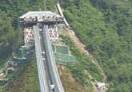

当季活动
More>>2016全台赏樱攻略！
活动时间：1月中旬到4月
Learn More>>
- 2016-02-182016高雄春天艺术节（2月到6月）
- 2014-02-152016年全台元宵节活动汇总
- 2014-01-24[台北]反转世界 华山颠倒屋（1/29-7/22）
- 2014-01-142016南投国际沙雕艺术节
景点推荐
More>>
屏东新地标：山川琉璃吊桥
南部屏东2015年年底新增一座地标性景点——山川琉璃吊桥，以原住民独特的琉璃珠作为桥身意象，悬挂与山川峡谷间，为全台最长吊床式吊桥，好似一道微笑的天际线。
- 台北101
- 清水断崖
- 七星潭
- 九份老街